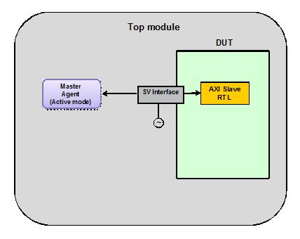

In this scenario, you are testing an AXI Slave DUT using an UVM AXI Master.Configure the AXI System Env to have one Master Agent, in active mode. The active master agent will generate AXI transactions for the Slave DUT. The Master Agent will also perform passive functions such as protocol checking, coverage generation and transaction logging.
When DUT has a single AXI slave port to be verified, testbench can either use a Master Agent in standalone mode, or use a System Env configured for a single Master Agent.
The advantages and disadvantages of the two approaches are listed below.
Advantages of using standalone agent versus System Env:
Testbench becomes light weight as System Env and related infrastructure is not required
Disadvantages:
The testbench does not remain scalable. If the number of AXI master ports to be verified increases, standalone Slave Agent should be replaced with System Env, or, multiple Slave Agents would need to be instantiated by you.
The AXI system monitor cannot be used, which is part of the System Env.
Implementation of this topology requires the setting of the following properties: (Assuming instance name of system configuration is "sys_cfg")
System configuration settings:
sys_cfg.num_masters = 1;
sys_cfg.num_slaves = 0;
Port configuration settings:
sys_cfg.master_cfg[0].is_active = 1;
Figure 9‑3 Slave DUT and Master VIP - Usage With Standalone Master Agent

Figure 9‑4 Slave DUT and Master VIP - Usage With System Environment